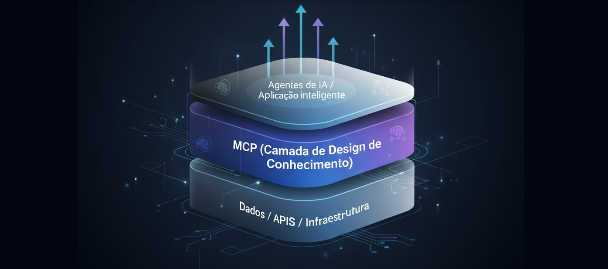

MCP: muito além de um protocolo de ferramentas para IA
Introdução: O que é o MCP?
Muitas pessoas ainda veem o MCP (Model Context Protocol) apenas como uma forma de conectar ferramentas a agentes de IA. Mas o MCP vai muito além disso: ele é uma nova camada de design de solução, que permite transformar conhecimento em infraestrutura reutilizável.
Criar uma ferramenta para um agente não é apenas escrever uma função. É projetar uma interface de entendimento entre humanos e máquinas — pensar cuidadosamente em como a entrada e a saída serão estruturadas para que o agente compreenda o contexto da melhor forma possível. Essa sensibilidade no design é o que gera resultados mais assertivos.
No MCP, um endpoint de ferramenta (tools/) define as capacidades disponíveis para o agente. Ele expõe métodos que permitem identificar e executar funções, APIs ou até mesmo outros agentes, que processam solicitações de acordo com um propósito específico.
Mas o verdadeiro poder do MCP vai além disso.
MCP como Camada de Orquestração de Conhecimento
Em uma arquitetura moderna, o MCP pode atuar como a camada de orquestração de conhecimento entre o backend de dados e os agentes de IA. Ele organiza o que o agente sabe, como ele acessa esse conhecimento e quais ações pode executar.
Além dos endpoints de ferramentas, o MCP traz endpoints de recursos (resources/) e de prompts (prompts/), que são as principais fundações de valor dos MCP servers.
Esses endpoints abrem uma nova forma de compartilhar conhecimento de domínio de forma estruturada e escalável. Imagine uma empresa que possui um profundo domínio técnico sobre um tema específico. Ao publicar um MCP server, outras plataformas podem consumir esse conhecimento sem precisar reconstruí-lo do zero — eliminando o chamado heavy lift de modelagem de conhecimento.
O endpoint de prompts permite que uma empresa crie e mantenha seus próprios prompts otimizados para seus casos de uso e ferramentas. Isso evita que cada cliente precise construir prompts do zero, além de facilitar a manutenção e a reutilização em larga escala.
Por fim, o endpoint de recursos amplia o contexto dos agentes com documentos, bases de dados e informações específicas — tornando o agente realmente consciente do domínio em que atua.
.png)
Imagine, por exemplo, uma fintech que publica um MCP server com seu domínio de crédito. Outras aplicações podem usar esse servidor para avaliar riscos, gerar relatórios ou interagir com dados financeiros de forma segura e contextualizada — sem expor dados brutos.
Aprendizados e Insights de Design
O grande aprendizado aqui é que o design de soluções para IA não é sobre “fazer ferramentas”, mas sobre estruturar conhecimento e intenção. O MCP é um ótimo exemplo de como essa mentalidade se traduz em arquitetura.
Em resumo, o MCP é muito mais do que uma forma de integrar agentes e ferramentas: é um framework de design de conhecimento, capaz de transformar domínios organizacionais em infraestrutura de inteligência reutilizável.
Essa é a base de um novo paradigma de design de soluções em IA — em que o conhecimento deixa de ser um artefato e passa a ser uma arquitetura.
Nos próximos posts, vou explorar como desenhar um MCP server eficiente e como o design de prompts e recursos influencia diretamente a performance de agentes corporativos.
Referências:
Understanding MCP servers - Model Context Protocol
MCP: Build Rich-Context AI Apps with Anthropic - DeepLearning.AI